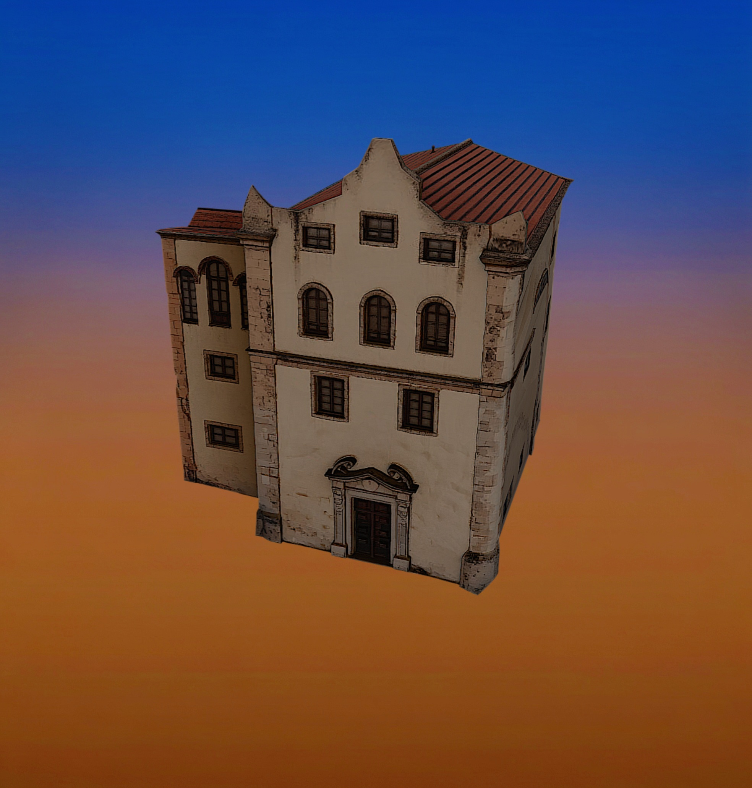
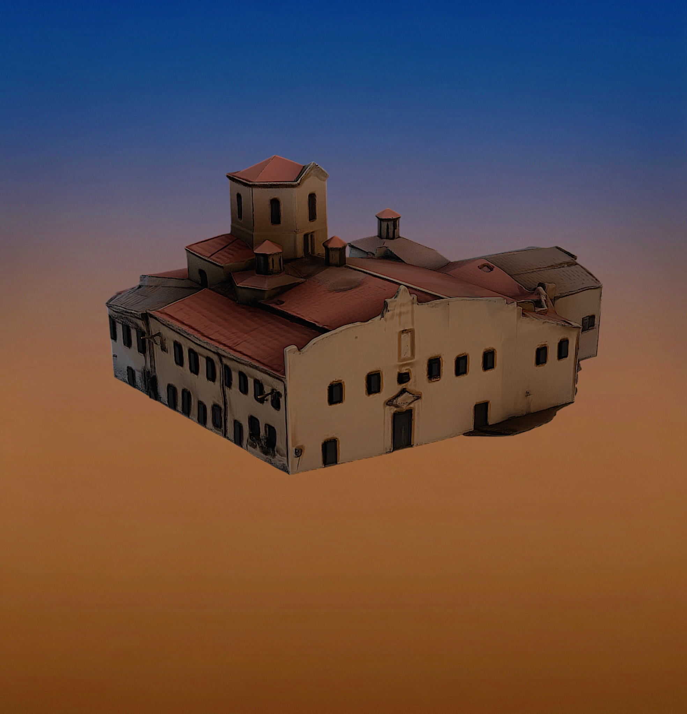
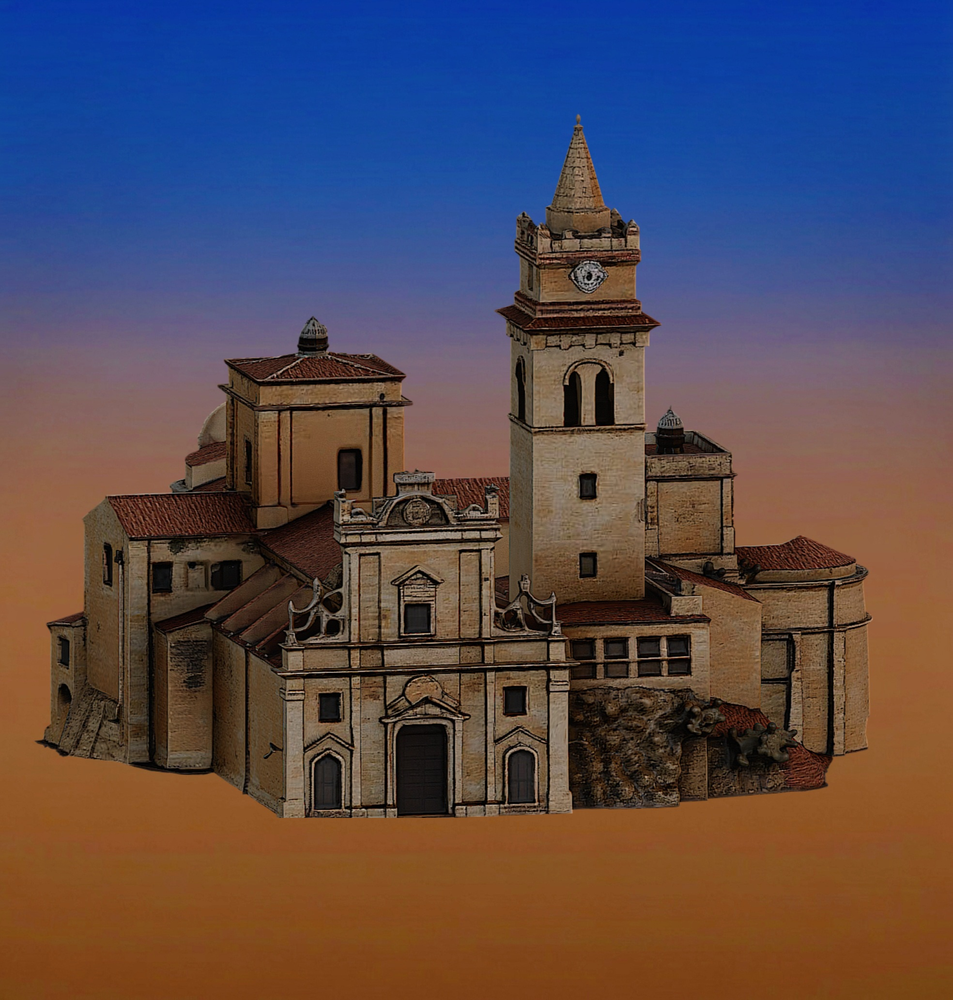

Le Chiese di Caccamo
Cinque templi di pietra, di fede e di memoria,
aprono le porte su una secolare storia.
Agli Angeli riposa, nel silenzio più sacro,
il Beato Giovanni, del borgo simulacro.
Se scendi alla Badia, la terra si fa fiore
nel ricamo in maiolica di raro splendore.
Entra nel gran Duomo, maestoso e solenne,
tra i marmi del Gagini e lo Stomer perenne.
Poi l'Annunziata svela le sue volte dipinte,
e la torre campanaria dalle guardie mai vinte.
Sali infine ai Cappuccini, sul colle radioso,
tra una Pala d'altare e un panorama maestoso.
Lasciati guidare dove il tempo si è fermato...

Annunziata

S. Benedetto della Badia

S. Maria degli Angeli
